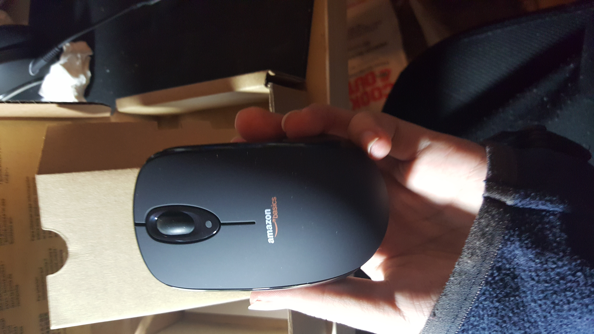
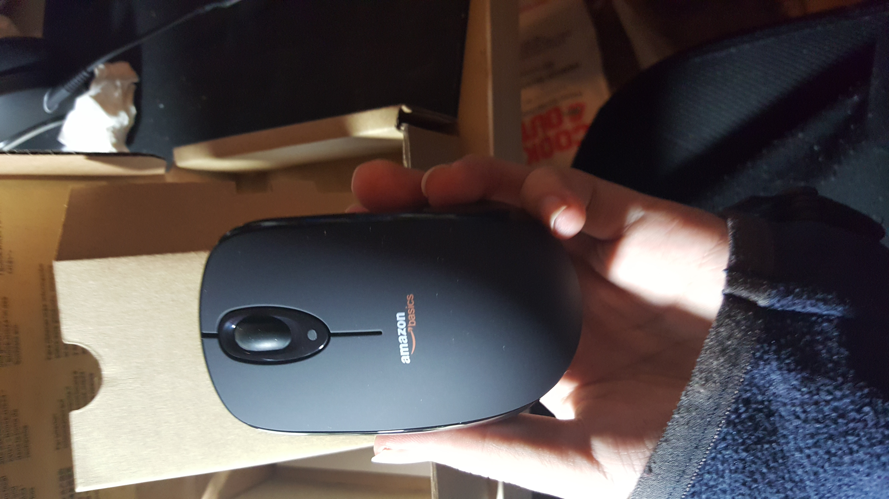

Basic Product Packaging! As we can see it's very plain.
 

All the parts. As we can see the "nano" receiver is nestled into the battery compartment.


The mouse compartment is built such that the batteries are kept in place by the top cover. This made it very annoying to power when the mouse is taken apart. Thankfully we can just use our Embedded board to power it!
Close up views of the circuit board when taken out. We can clearly see the image sensor here as well as what looks to be a slot for an extra diode/resistor pair.
Here we see how the mouse wheel operates. All three "clicks" operate with a SPST switch as we can clearly see. The mousewheel rotation itself is a rotary encoder
View with the "lens" taken off. We can see the small hole in where the optical sensor gets data while the red LED to the left shines on whatever surface is below.
Close up of the 24pin MCU/Radio Transceiver Combo and 8 pin Optical sensor. The MCU also includes a 10-bit AD converter. Upon research I've found that this is the ADNS-5030 optical sensor and nordic nRF24E1 MCU.
Close up of the frequency crystal.